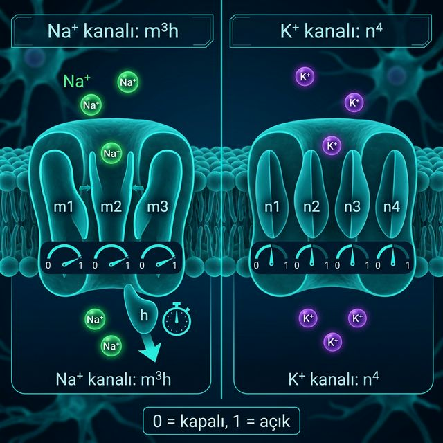

Hodgkin ve Huxley, iyon akımlarını ölçerek bunları yöneten denklemleri buldu. Kalamar dev aksonunu modelleyerek aksiyon potansiyelinin matematiksel temelini attılar.
Zar, elektrik yükü depolayan bir kondansatör, iyon kanalları ise voltaja bağlı değişken dirençler gibi davranır. Model, tüm akımların toplamını voltaj değişimine bağlar.
\(\text{Na}^+\) (\(m^3h\)): 3 hızlı aktivasyon (\(m\)) ve 1 yavaş inaktivasyon (\(h\)) kapısından oluşur.
\(\text{K}^+\) (\(n^4\)): 4 yavaş aktivasyon (\(n\)) kapısı ile açıklanır; inaktivasyon kapısı yoktur.
Kanal, ancak tüm kapıları (\(m\), \(h\) veya \(n\)) aynı anda doğru konumdaysa (1) açıktır. Matematiksel olarak olasılıkların çarpımıdır.
